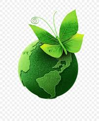

Organic Farming
A method that focuses on cultivating crops without synthetic pesticides or fertilizers, emphasizing soil health and ecological balance.
Key Features
No synthetic chemicals
Crop rotation
Biological pest control
Composting

Hydroponics
Growing plants without soil, using mineral nutrient solutions in an aqueous solvent, often in controlled environments.
Key Features
Soil-less cultivation
Water efficient
Year-round production
Space saving

Permaculture
A holistic approach creating agricultural systems that mimic natural ecosystems for sustainability and self-sufficiency.
Key Features
Sustainable design
Diverse ecosystems
Closed-loop systems
Natural patterns

Precision Farming
Technology-driven approach using GPS, IoT, and data analytics to optimize field-level management regarding crop farming.
Key Features
GPS technology
Data analytics
Variable rate application
Yield monitoring

Agroforestry
Integrating trees and shrubs into crop and animal farming systems to create environmental, economic, and social benefits.
Key Features
Biodiversity
Carbon sequestration
Soil conservation
Multiple products

Aquaponics
Combines aquaculture (raising fish) with hydroponics in a symbiotic environment where plants use fish waste as nutrients.
Key Features
Fish and plants
Closed system
Water recycling
High efficiency